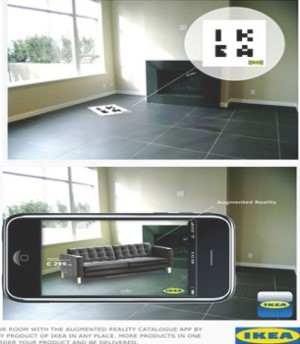

AR(Augmented Reality, 증강현실)
가상 현실(Virtual Reality)이 이미지, 주변 배경, 객체 모두를 가상의 이미지로 만들어 보여 주는 반면, 증강 현실은 추가되는 정보만 가상으로 만들어 보여줍니다.
즉 증강 현실은 현실 세계의 실제 모습이 주가 된다는 점에서 가상 현실과 다르지요.
예를 들면, 네비게이션 시스템에서 실제 도로 장면(Reality)에 주행 정보를 추가하여 보여주면 증강 현실이 되고, 가상의 지도(Virtual)에 주행 정보를 보여주면 가상 현실이 됩니다.
여러분은 두 가지 네비게이션 시스템 중 어떠한 것을 선택하고 싶나요?
증강 현실
가상 현실
증강 현실 기법을 활용한 네비게이션 화면이 훨씬 멋있어 보이지 않나요?
이렇듯 증강 현실은 현실세계와 가상세계를 잘 조화시켜 사용자가 실제 및 가상 환경이 분리되었다는 것을 인지하지 못한채, 사용자와 가상세계간의 실시간 상호작용이 가능한 몰입감을 제공합니다.
또한 증강 현실 기법을 활용하여 생활의 편리성을 제공하는 사례도 많답니다.
옷을 구매할 때, 의류 매장에서 색상이나 스타일이 어울리는지 옷을 입어봐야 하지만, 증강 현실을 사용할 경우 착용해보지않고도, 간편하게 확인할 수 있습니다.
 augmented reality wearing fitting room
augmented reality wearing fitting room
가구를 구매할 때에도, 잡지에 있는 가구가 원하는 장소에 배치된 모습을 증강 현실 기법으로 확인함으로써 마케팅 효과를 거두고 있답니다.

증강 현실 기법
구글 글래스(Google Glasses)와 같은 증강 현실 안경의 경우, 이동시 내비게이션처럼 이동 경로를 제공하거나, 사물이나 상황에 맞게 식별 정보를 보여 줄 수 있습니다.
증강 현실 안경
이렇듯 구글 글래스와 같은 웨어러블 기기가 보편화되어 생활의 편리성을 제공하며, 보다 나은 몰입감과 현실감을 주는 장점을 가진 증강 현실은 더욱 발전할 것이라 예상됩니다.
[네이버 지식백과] 증강 현실 [Augmented Reality] (소프트웨어 어휘다지기 - 중등)